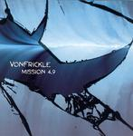

| Artist: | Von Frickle |
| Title: | Mission 4.9 |
| Label: | Kiss The Sun Records OIE008 |
| Length(s): | 50 minutes |
| Year(s) of release: | 2005 |
| Month of review: | [05/2006] |
| 1) | Kablam! | 4.28 |
| 2) | Cranium Controller | 3.25 |
| 3) | Shapeshifter | 4.03 |
| 4) | Petri Dish Incident | 7.02 |
| 5) | Attack Of The Giant Eyeball | 6.30 |
| 6) | Terra Firma Exodus | 6.43 |
| 7) | Protoplasmic Squid Eater | 3.20 |
| 8) | Zombie Stomp | 3.18 |
| 9) | POD | 11.28 |
Cranium Controller continues the heavy line of the band, which is most characteristic for it. Strongly riff-driven, the band is very much a typical instrumental progrock bands, and I have to admit, the music is lively and appealing.
Shapeshifter combines eighthies King Crimson with the mellotron of Anekdoten and a very circus like melody that dominates the tune. The end result is really nice, with loud and fast drumming, a very repetitive and tense piece of music. The band goes wild towards the end. Excellent stuff.
Petri Dish Incident opens in world music territory, but of the mysterious and scary kind. The drummer is kneedeep in percussion and weird, low pitched sounds abound. This is the kind of territory that Djam Karet has been exploring for some time.
The band is at its most manic on the the second half of Attack Of The Giant Eyeball. This is excellent driven material, with a bit of punk feel to it. There is some much energy in here.
Terra Firma Exodus takes us back to cosmic synths. We all need some piece sometime. This is rather lazy, ethereal piece, close to electronic music. The melodies are good, and the guitar is slightly bluesy and wailing. The feel is Floydian, but a bit more electronic and sad.
On Protoplasmic Squid Eater the punkish/New Wave feel comes back in. This can turn either way, but it seems we are in for a fun song. The organ part particularly hints at it. Zombie Stomp has a plodding feel, with mimicked horns, giving it a hint of New Orleans music, but via a bit of dissonance we soon arrive back, safely, in progrock territory. Not for long though, since the band likes to alternate these different passages.
POD is by far the longest tune on this album, and a strange one it is. The guitar sound has a weird twang to it, while the rhythms are loud. Then we move more into meandering jazzrock style territory with the weird opening rearing its head now and then. We end low-key.